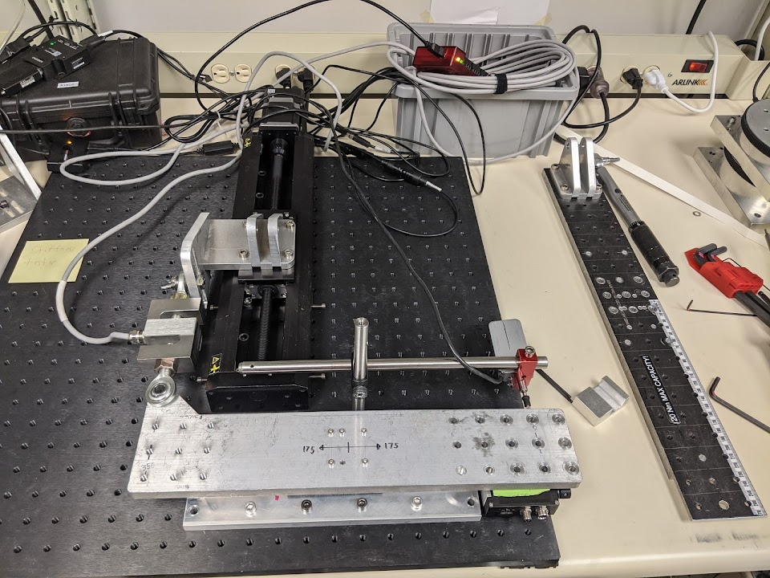
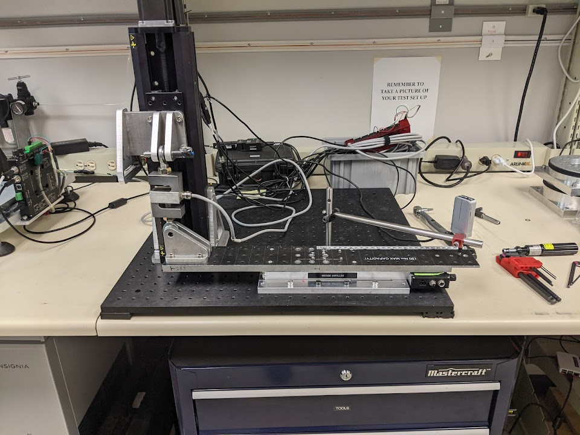
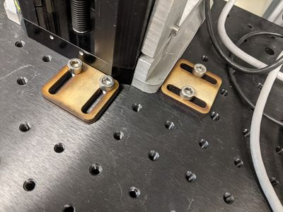

Disclaimer: This was internal documentation that has been converted
from Zaber’s internalwiki. Some information may have been removed, and
references to other wiki pages are not publicly available. This
page may also contain some odd formatting.
Dev/R-LSM/2021-03-13 - Recirculating Bearing Stiffness for Specs
| Product |
R-LSM |
| Test Attributes |
Stiffness |
| Tester |
Nigel |
| Plan Reviewed by |
Nathan P |
| Report Reviewed by |
Nathan P |
| Test Date |
2021/04/21 |
Abstract
- The updated LSM design with recirculating bearings was tested for stiffness in pitch,roll, and yaw

The previous generation LSM's used cam follower bearings, as shown here
- 5 stages were tested and all surpassed the recommended new specifications of 150 Nm/°
- All stiffness testing results show there should be no issues increasing stiffness specifications to 150 Nm/°
- However, I suspect 150 Nm/° may be fairly conservative for properly torqued stage top bolts, especially in pitch
Background
- The LSM has been redesigned with recirculating bearings
- The installed rails are not from our new supplier (that should in theory be better)
- We are using the “best bad rail” we have with the expectation that the new rail will be as good or better
- When we get the production rail, we will exchange the rails in two stages and quickly retest them to confirm the specs from the old batch of rail are still valid.
- While these stages are 99.5% production ready, anything fishy should be noted
- Mark has recommended updated specifications of 150 Nm/° here: https://iwiki.izaber.com/Dev/R-LSM/Recirculating_Bearing_Design#2021-05-07_Published_Stiffness_Specs
- Previous stiffness tests have been done with the new design consistently showing high stiffness:
Purpose
- Establish specs for the new LSM design with recirculating bearings
Method
Equipment
| Test Equipment |
|
| Devices: |
See below |
| Load cell |
Omega 250 lb with U6 Labjack DAQ |
| Measurement Device: |
Heidenhain |
| Forcing Stage: |
A-LST0250A |
|
LSM200B |
LSM200B |
LSM200B |
X-LSM200A |
X-LSM200A |
| Motor/Controller Assembly |
M-3PO |
TT-40 |
TC-14 |
WAC-47 |
T3-M4 |
| Base Assembly |
R5-D4 |
ZZ-4Z |
T3-H8 |
R2-KT |
HK-47 |
| Lead Screw |
C-21 |
0-0-0 |
2-1B |
FA-4 |
GH-7 |
| Device Name |
M-3PO R5-D4 C-21 |
TT-40 ZZ-4Z 0-0-0 |
TC-14 T3-H8 2-1B |
WAC-47 R2-KT FA-4 |
T3-M4 HK-47 GH-7 |
| Serial Number |
4000000029 |
4000000030 |
4000000031 |
4000000032 |
4000000034 |
Settings
| Test Settings |
|
| Repetitions: |
3 |
| Max Torque (Nm): |
3 |
| Move Increment (µm): |
15 |
Code
Procedure
Note: I was unable to export this section from the wiki

Pitch Stiffness Setup

Roll Stiffness Setup
Results and Analysis
- All stages exceeded 150 Nm/° in pitch, roll, and stiffness
- It was found that some stage tops had lower than spec torque on the bolts
- Not all stage top bolts were checked for torque, therefore some results may be artificially low
- Only the bolded results below were found after stage top bolts were torque to the specified 0.6 Nm
| Device Serial |
Pitch [Nm/°] |
Roll [Nm/°] |
Yaw [Nm/°] |
| 4000000029 |
230.4 |
202.5 |
167.1 |
| 4000000030 |
228 |
181.2 |
232.7 |
| 4000000031 |
218.9 |
177.3 |
187 |
| 4000000032 |
234.3 |
156.5 |
199.2 |
| 4000000034 |
234.9 |
166.9 |
213.9 |
| Statistics |
|
|
|
| MAX |
234.9 |
202.5 |
232.7 |
| MIN |
218.9 |
156.5 |
167.1 |
| Average |
229.3 |
176.88 |
199.98 |
| Std. Deviation |
5.79 |
15.4 |
22.4 |
Conclusion
- All stages surpassed the recommended stiffness of 150 Nm/°
- These results, along with previous testing, suggest that 150 Nm/° stiffness would be a reasonable spec for pitch, roll, and yaw
Evaluation and Recommendations
- As noted, a couple of the stages were found to have stage top bolts below specified torque
- Only the stages that had initial results significantly lower than expected had their bolts re-torqued
- Once final production models are being tested, it may be worth re-evaluating stiffness specs
- I suspect that 150 Nm/° would be on the conservative side for properly torqued stage tops, especially in pitch
- For future stiffness tests, it’s recommended that we use the laser cut breadboard blocks I made to consistently reposition the loading stage assembly (See below)
- This saved me a lot of time once implemented due to the repetitive nature of testing 5 stages with 3 loading orientations
- This has been added to the procedures

Laser Cut Breadboard Blocks
{kind=link}
{kind=link}
{kind=link}
{kind=link}
{kind=link}
{kind=link}